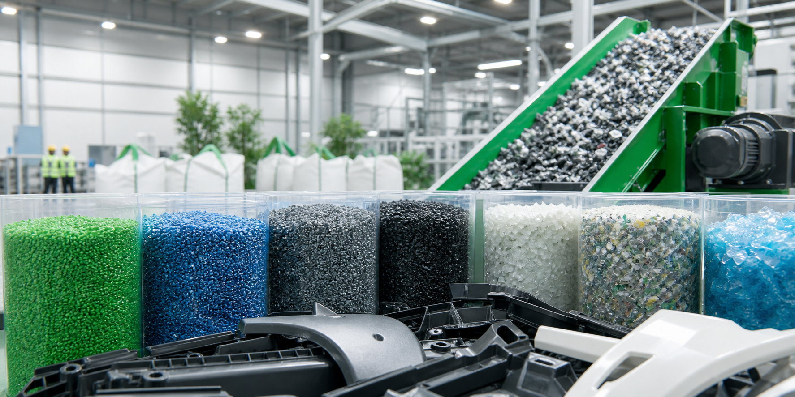

Post-industrial recycled resin
Regrind and pellet options for applications where recycled content and cost control matter.

US-focused plastic recovery and resin sourcing
CycleVance helps manufacturers turn production scrap, offcuts, and obsolete plastic parts into dependable recycled materials while sourcing quality recycled and virgin resin for large-scale production.
What we do
We work with automotive OEMs, tier suppliers, industrial plants, and large factories that need practical outlets for plastic waste or stable sources of recycled and prime resin.
Purchasing
CycleVance purchases clean and mixed plastic streams from manufacturing, assembly, and end-of-program inventories. Typical sources include edge trim, rejected parts, purge, sprues, runners, bins of obsolete stock, and automotive plastic components.
Material type, volume, packaging, contamination, and pickup location.
Transparent pricing based on grade, consistency, logistics, and market demand.
Coordinated removal and downstream recycling for qualified plastic streams.
Supply
We supply manufacturers that need cost-effective, production-ready materials with documentation, consistent communication, and practical logistics support.
Regrind and pellet options for applications where recycled content and cost control matter.
Prime-grade resin sourcing for factories that need predictable performance and volume.
Support for resin grade, color, melt flow, packaging, and recurring purchase planning.
How it works
Send photos, resin codes, approximate weight, location, and packaging format.
We review grade, volume, contamination risk, logistics, and downstream fit.
We coordinate pickup or shipment and support repeat programs for steady streams.
For buyers, we match recycled or virgin resin options to production requirements.
Start a conversation
For scrap sellers, include material type, photos, weight, packaging, and pickup location. For resin buyers, include grade, monthly volume, color, spec requirements, and delivery state.